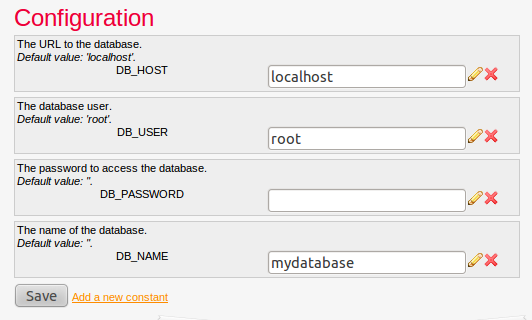
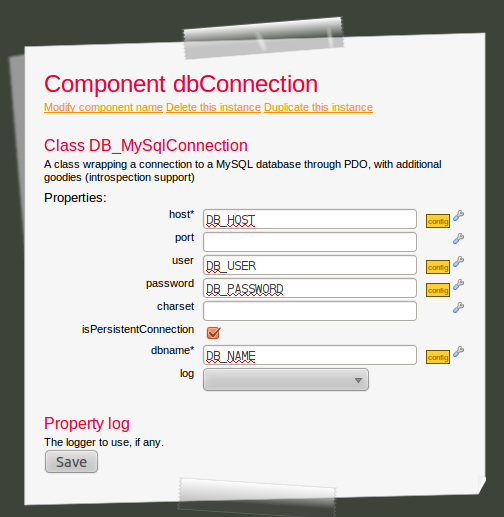
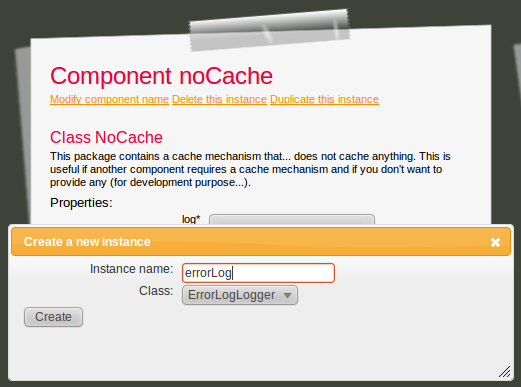
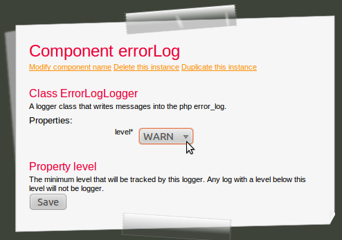
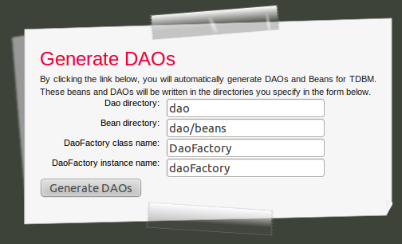

Starting with TDBM v2.0, TDBM can automatically generate DAOs and beans for you. This feature will allow you to cleanly separate the database code (that you will put in DAOs) from the rest of your code.
The first step to get started with TDBM 2.0 is to create a TDBM_Service instance.
Click on "Create a new instance". In this example, we will name our instance "tdbmService".
Now, we need to configure this instance. A TDBM_Service must be connected to a database connection, and to a caching service.
First, we will create the database connection. We have a choice amongst several database, we will choose MySQL for this example.
Click on the "connection" dropdown, then on "Create a new instance".
Name the new instance "dbConnection", and make it a DB_MySQLConnection.
You can enter input the connection details directly in the DB_MySQLConnection instance. This is fine for a simple project. However, if you want to share your project with other people, or if you want to install it on several environments, you want to avoid having specific configuration (your db login and password) inside the Mouf configuration file (MoufComponents.php). Indeed, if you share this file, you will share your configuration, which is a bad practice. Therefore, a good practice is to put the database related settings into the configuration file. We will do that now.
Click on the "Edit configuration" link. We will create 4 configuration variables: DB_HOST (the URL to the database), DB_USER (the database user), DB_PASSWORD (the password), DB_NAME (the database name). You will notice that for each value you create, you can provide the value for your system, and a "default" value that will be used to create a default config.php file when there is no config.php file set (this is useful when you install your application on another system)
After creating all the configuration variables, your screen should look like this:
We will now instruct the "dbConnection" instance to use these configuration.
Click on the "View declared instances" menu and select our "dbConnection" instance.
You might need to click the "View properties" menu to access the properties screen.
For each configuration value, click on the tools icon on the right of the textfield.
Select "config" in the "Source" drop-down, then select the configuration value to bind the field to.
You should end up with this:
We are now done configuring the database, let's go back and continue configure the TDBM_Service instance by clicking
the "tdbmService" link in the "Reffered by instances:" section.
We have configured the database connection, we need to configure the cache service.
TDBM requires a cache in order to store database related data. Indeed TDBM stores in cache the structure of the database, and relies heavily on declared foreign keys to perform the "smartest" queries. Instead of querying the database for those foreign keys, it will query them once, and put them in cache. This means that if you modify the database model, you will need to purge the TDBM cache.
TDBM does not provide itself the caching mechanism. You are free to choose the best one amongst the Mouf components implementing the CacheInterface interface. Mouf provides a number of cache implementations:
SessionCache: use the user's cache as a session. Very easy to set-up, but limited, since the cache is
not shared between users.FileCache: stores data in a file on the server's file system. Pretty efficient.APCCache: uses the APC caching system. The most efficient way to perform caching, but you will need
to have the APC extension installed on your system to use it.NoCache: this is a caching system that... does not cache anything! You should never use it in
a production environment, but it can be pretty useful in a development environment when you are frequently
changing your database model and are not willing to purge the cache each time you make a change.In this example, we will use the NoCache implementation because we don't want to bother with a cache for development.
The first step is to download the NoCache package, in the utils/cache group.
When this is done, go back to the "tdbmService" instance. You can now set the cacheService of TDBM to a noCache instance:
The "noCache" instance requires a logger to be set up. So we need to add a logger package. For this example, we will use the ErrorLogLogger logger (that logs messages to the PHP error log).
So we have to download the ErrorLogLogger package in the utils/logger group.
Once this is done, we can bind a logger instance to the "noCache" instance:
Finally, you can configure the logger to log only messages that reach a certain severity level.
In this chapter, we will see how to generate DAOs and beans, using the TDBM_Service instance we installed in the last chapter.
First, go to the "tdbmService" instance page (select it from the "View declared instances", or use the full-text search feature).
On the right part of the screen, select the "Generate DAOs" link.
On this screen, you can choose the directory that will contain the DAO classes, and the directory that will contain the Beans. Also, a DAOFactory object (that allows easy access to each DAO) will be generated. Let's just keep the default settings and click the "Generate DAOs" button.
That's it, we generated all the DAOs for our database. Let's have a closer look at what was generated.
Note: if you are using Eclipse, we strongly recommend you to refresh your project, to load the new classes.
For each table in your database, TDBM will generate a DAO and a bean. The DAO is the object you will use to query the database. Each row of the database will be mapped to a bean object.
Both DAOs and beans are divided in 2 parts. Let's assume you have a "users" table. TDBM will generate those classes for you:
UserDaoBase: the base class that contains methods to access the "users" table. It is generated by TDBM and you should
never modify this class.UserDao: this class extends UserDaoBase. If you have some custom requests, you should perform them in this class. You can
edit it as TDBM will never overwrite it.UserBaseBean: the bean mapping the columns of the "users" table. This class contains getters and setters for each and every
column of the "users" table. It is generated by TDBM and you should
never modify this class.UserBean: this class extends UserBaseBean. If you have some custom getters and setters, you should implement them in this class. You can
edit it as TDBM will never overwrite it.Let's now have a closer look at the methods that are available in the "UserDao" class:
public function getNewUser() : returns a new UserBean object ready to be added in the database.public function saveUser(UserBean $obj) : saves a UserBean object in database (TDBM can also decide to save the object by
itself so most of the time, you don't need to call this function explicitly)public function getUserList() : returns all users records as an array of "UserBean" objects.public function getUserById($id, $lazyLoading = false) : Get a UserBean specified by its ID (its primary key)public function deleteUser($obj) : Deletes the UserBean passed in parameter.The last 2 functions are protected. It means they are designed to be used in the UserDao class.
protected function getUserListByFilter($filterBag=null, $orderbyBag=null, $from=null, $limit=null) : returns a list of
users based on a filter bag (see the TDBM_Service documentation to learn more about filter bags). You can also
provide an order, and an offset / limit range.protected function getUserByFilter($filterBag=null) : this has exactly the same purpose as getUserListByFilter except
it returns only 1 bean object instead of a list of bean objects.